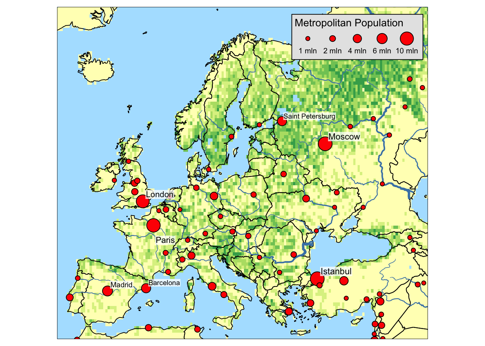

Using tmap
This package provides a useful set of functions for plotting vector (spatial points/polygons) and raster (layer/brick/stack) using a framework similar to ggplot2. A nice overview vignette walks through these functions.
This tutorial is just a quick demo of what you can do with tmap using a few different sets of data to show it’s simplicity. See the vignette details.
library(tmap)
data(Europe)
qtm(Europe)Some Examples
tm_shape(Europe) +
tm_polygons("well_being", textNA="Non-European countries", title="Well-Being Index") +
tm_text("iso_a3", size="AREA", root=5) +
tm_format_Europe() +
tm_style_grey()
data(land, rivers, metro)
tm_shape(land) +
tm_raster("trees", breaks=seq(0, 100, by=20), legend.show = FALSE) +
tm_shape(Europe, is.master = TRUE) +
tm_borders() +
tm_shape(rivers) +
tm_lines(lwd="strokelwd", scale=5, legend.lwd.show = FALSE) +
tm_shape(metro) +
tm_bubbles("pop2010", "red", border.col = "black", border.lwd=1,
size.lim = c(0, 11e6), sizes.legend = c(1e6, 2e6, 4e6, 6e6, 10e6),
title.size="Metropolitan Population") +
tm_text("name", size="pop2010", scale=1, root=4, size.lowerbound = .6,
bg.color="white", bg.alpha = .75,
auto.placement = 1, legend.size.show = FALSE) +
tm_format_Europe() +
tm_style_natural()
tm_shape(Europe) +
tm_polygons("well_being", title="Well-Being Index") +
tm_facets("part", free.coords=FALSE) +
tm_style_grey()Global Land Cover
data(land)
options(scipen=0)
data(World)
pal8 <- c("#33A02C", "#B2DF8A", "#FDBF6F", "#1F78B4", "#999999", "#E31A1C", "#E6E6E6", "#A6CEE3")
tm_shape(land, ylim = c(-88,88), relative=FALSE) +
tm_raster("cover_cls", palette = pal8, title="Global Land Cover",
legend.hist=TRUE, legend.hist.z=0) +
tm_shape(World) +
tm_borders() +
tm_format_World(inner.margins=0) +
tm_legend(text.size=1,
title.size=1.2,
position = c("left","bottom"),
bg.color = "white",
bg.alpha=.2,
frame="gray50",
height=.6,
hist.width=.25,
hist.height=.2,
hist.bg.color="gray60",
hist.bg.alpha=.5)Old School Map
tm_shape(land, projection="eck4") +
tm_raster("elevation",
breaks=c(-Inf, 250, 500, 1000, 1500, 2000,
2500, 3000, 4000, Inf),
palette = terrain.colors(9), title="Elevation",
auto.palette.mapping=FALSE) +
tm_shape(World) +
tm_borders("grey20") +
tm_grid(projection="longlat", labels.size = .5) +
tm_text("name", size="AREA",fontfamily = "Roboto Condensed") +
tm_compass(position = c(.65, .15), color.light = "grey90") +
tm_credits("Eckert IV projection", position = c(.85, 0), fontfamily = "Roboto Condensed") +
tm_style_classic(inner.margins=c(.04,.03, .02, .01), legend.position = c("left", "bottom"),
legend.frame = TRUE, bg.color="lightblue",
legend.bg.color="lightblue",
earth.boundary = TRUE, space.color="grey90",
fontfamily = "Roboto Condensed")